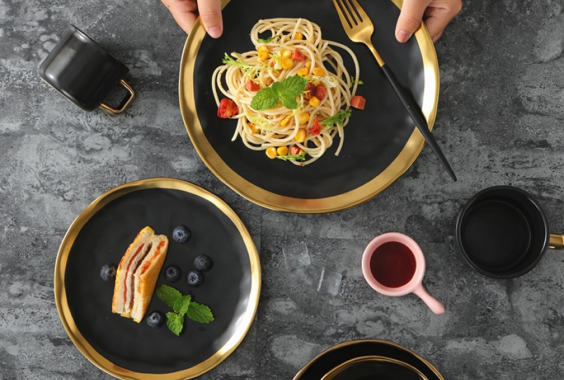
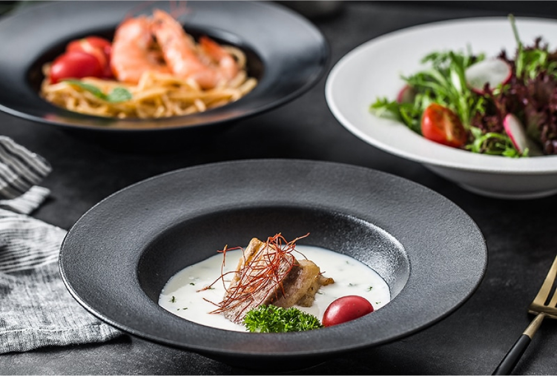
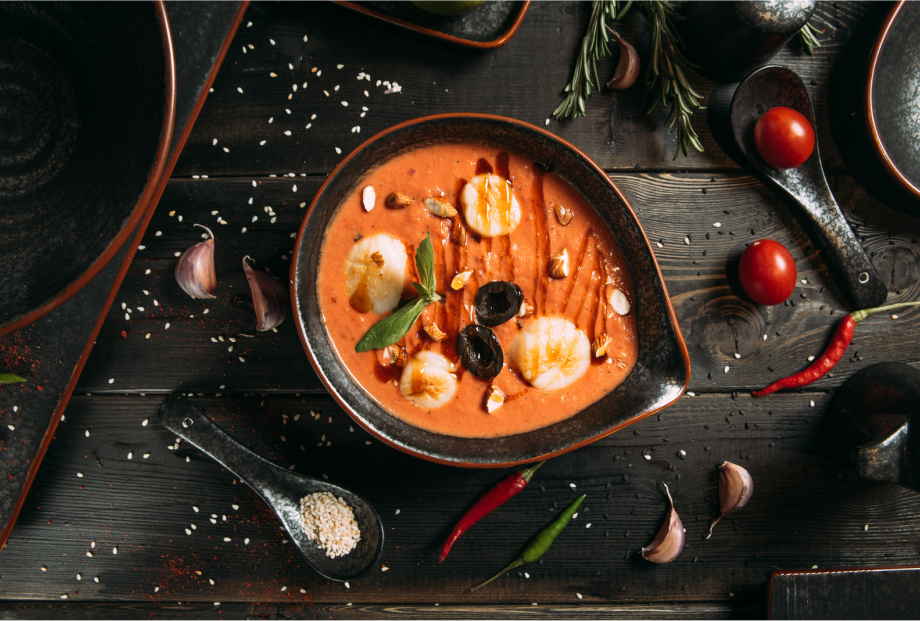
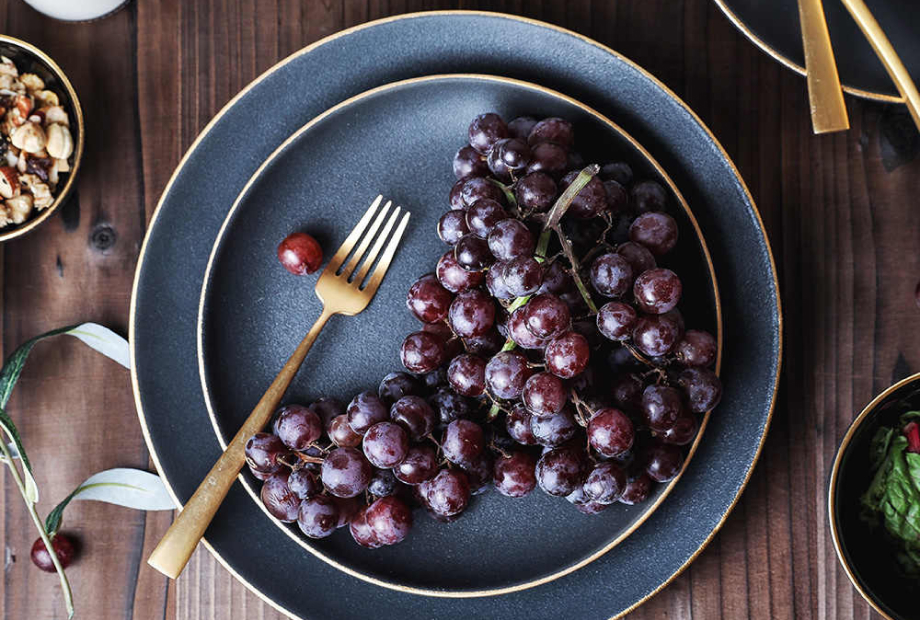
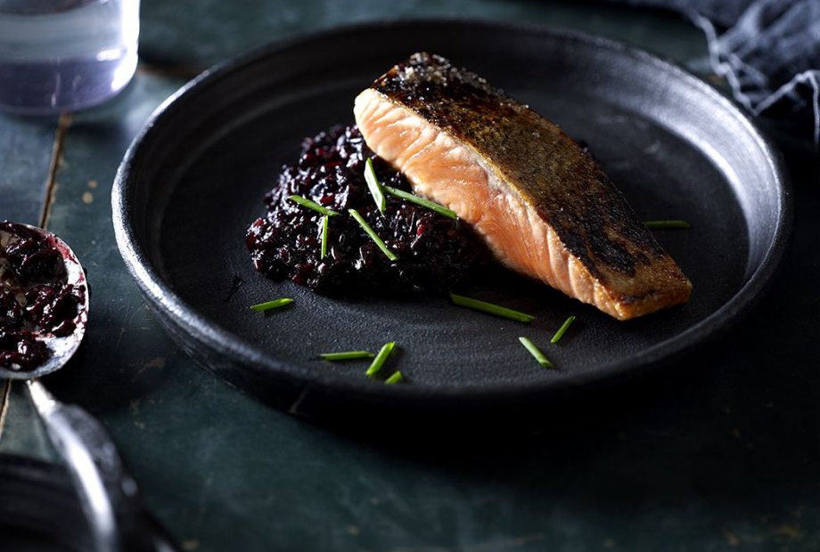

Подготовьте емкости под краситель. Один краситель - одна емкость.
Постирайте все изделия, которые планируете окрашивать без использования кондиционера.s

ПРИГОТОВЛЕНИЕ РАСТВОРА
Развести активатор в воде комнатной температуры исходя из пропорции 50 грамм на 1 литр воды.
Замочить окрашиваемое изделие в растворе на 20 минут.
По истечению указанного времени хорошо отжать ткань руками.
Разведите краситель в теплой воде, длядостижения максимальной яркости цвета рекомендуется использовать 3 грамма на 100 мл воды. При уменьшении концентрации можно достичь более светлых оттенков.

ОКРАШИВАНИЕ
Хаотично смять изделие с мелкими складками, сформировав плотный комок. Зафиксируйте его резинками или нитью.
Нанесите предварительно разведенные красители на изделие, щедро поливая его. Для удобства лучше использовать бутылочку с носиком.
При окрашивании цвета смешиваются между собой, образуя новые оттенки.

ОЖИДАНИЕ
Оставьте окрашенное изделие в сложенном виде до высыхания, не менее чем на 12 часов.
Для лучшего впитывания красителя выдержите 24 часа.

ПОЛОСКАНИЕ
Тщательно прополощите ткань в холодной воде до тех пор пока вода не станет чистой.
Замочите изделие в горячей воде с добавлением мыла в пропорции чайная ложка на литр воды на 10-15 минут.
Постирайте на деликатном режиме при температуре не более 40 °C.
Высушите естественным путем.

УХОД
Изделие перед стиркой вывернуть на изнанку.
Стирать на деликатном режиме при температуре не более 40 °C.
Краситель для тканей растительного происхождения (хлопок, лён, вискоза). Подходит для домашнего использования.
На окрашивание одной футболки в среднем необходимо 2-3 гр. красителя.
Чтобы достичь максимальной яркости изделия, смешайте раствор исходя из пропорции 3 гр. на 100 мл воды. Также при уменьшении концентрацииможно достичь более светлых оттенков.
Не забудьте приобрести активатор. Он необходим в процессе окрашивания.